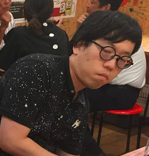
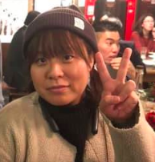

Message
today 22:30Kotaro Okuya |
Mentorhello Kame-san, how are you doing today? I checked your Git-hub code, I guess it's better to change some point of html and css more efficient way to atract suctomers. I will inform you the points by clack later. |
|---|---|
yeasterday 7:30Yasutake Nagano |
Total technology cooperator after GGAMorning Kame-san, how will you write back-end code? I recomend to use PHP not GO program due to customer intension. For more infrmation, contact me anytime by whats app or slack. |
28th Oct. 4:12Yoshinori Nagafuchi |
Finance and Lowhello Kame-chan!! Regarding to AP support to Trace, how can you decline thier investiment, are you sure?? I guess this is really really nice timing their offer. I understand your vision and emotion but you have to concern about company funds more. I do not see any any ilegal point. Please call me later. |
25th Oct. 12:12Ayako Umeda |
Job Change markethello Kame-chan!! Regarding to AP support to Trace, how can you decline thier investiment, are you sure?? I guess this is really really nice timing their offer. I understand your vision and emotion but you have to concern about company funds more. I do not see any any ilegal point. Please call me later. |
18th Oct. 13:12Shigeharu Enoki |
Freerance Designerhello Kame-chan!! Regarding to AP support to Trace, how can you decline thier investiment, are you sure?? I guess this is really really nice timing their offer. I understand your vision and emotion but you have to concern about company funds more. I do not see any any ilegal point. Please call me later. |
13th Oct. 20:08Rika Ono |
Block chainhello Kame-chan!! Regarding to AP support to Trace, how can you decline thier investiment, are you sure?? I guess this is really really nice timing their offer. I understand your vision and emotion but you have to concern about company funds more. I do not see any any ilegal point. Please call me later. |